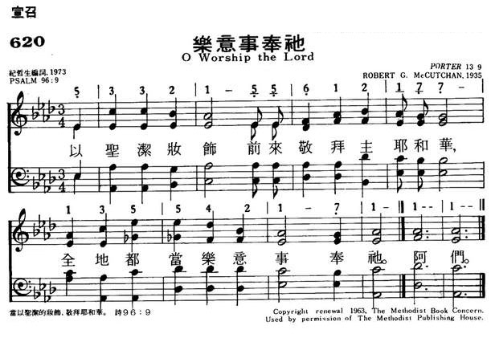

|
|
620乐意事奉祂 |
|
O worship the Lord in the beauty of holiness; Amen. |
以圣洁妆饰前来敬拜主耶和华,
全地都当乐意事奉祂. 阿们. |
|
https://www.mred365.cn/szxg/7623.html  |
|
|
|
|

| Text: | O Worship the Lord |
| Tune: | PORTER |
| Composer: | Robert G. McCutchan, b. 1877 |
|
O worship the Lord in the beauty of holiness (Psalm 96) |
Tune Information
| Title: | PORTER (McCutchan) |
| Composer: | Robert G. McCutchan |
| Meter: | Irregular |
| Incipit: | 53321 55612 17713 |
| Key: | A♭ Major/G Major |
| Short Name: | Robert G. McCutchan |
| Full Name: | McCutchan, Robert Guy, 1877-1958 |
| Birth Year: | 1877 |
| Death Year: | 1958 |
A noted hymnologist, McCutchan studied at Park College, Parkville, Missouri, and Simpson College, Indianola, Iowa (BM 1904). He went on to teach voice at Baker University in Baldwin, Kansas, and founded the conservatory of music there in 1910. After further study in Germany and France, in 1911 he became dean of music at DePauw University in Greencastle, Indiana, serving there 26 years. He helped compile the Methodist Hymnal in 1936. His works include:
使徒保罗写道：“我为你们的魂，非常乐于付出一切，甚至乐于完全付出自己。”（哥林多后书12:15）我们从这番话看出，耶和华的仆人应当培养怎样的观点和态度呢？据一位圣经学者指出，保罗向哥林多的基督徒写这番话，意思是对他们说：“我甘愿付出自己的力量、时间、生命，甚至一切，以求造福你们，就像父亲很乐意为儿女付出一切一样。”为了履行基督徒的服事职务，保罗甘愿“完全付出自己”，甚至达到“精疲力竭”的地步也在所不惜。
不但这样，保罗也“非常乐于”这样做。《新标点和合本》圣经把这个片语翻做“甘心乐意”。你又怎样呢？你愿意把自己的时间、精力、天赋和资源，用来事奉耶和华上帝和造福别人吗？为了这样做，你即使有时要达到“精疲力竭”的地步，是否也在所不惜呢？你“非常乐于”这样做吗？
他们完全不愿事奉上帝
大多数人并非仅是迟疑不决事奉上帝，而是断然拒绝事奉上帝。他们所表现的，是忘恩负义、自私自利、独立自主，甚至顽梗悖逆的精神。撒但引诱亚当夏娃，使他们怀有这样的思想。他用谎言欺骗亚当夏娃，说他们会像“上帝能知道善恶”，能够自行定出是非标准。（创世记3:1-5）今日，许多人都具有同样的精神，认为他们应当享有完全的自由，喜欢做什么就做什么，对上帝不负有任何义务，也不容上帝干预他们的事务。（诗篇81:11,12）他们要把自己拥有的一切，完全用来追求个人的利益。——箴言18:1。
很可能你并不怀有这种极端的态度。也许你衷诚赏识现在所享有的生命恩赐，也憧憬在地上乐园里享永生的奇妙希望。（诗篇37:10,11；启示录21:1-4）此外，你也深深感激耶和华对你表现的良善。然而，我们人人都必须提防撒但的诡计，因为他能够歪曲我们的思想，使我们的服务到头来实际变成无法受上帝接纳。（哥林多后书11:3）这种情形怎可能发生呢？
服务必须出于甘心
耶和华要我们甘心乐意、全心全意地事奉他。他绝不会强迫我们遵行他的旨意。然而，撒但却对人威逼利诱，要使人受他摆布。诚然，圣经把事奉上帝跟义务、诫命、律例等相提并论。（传道书12:13；路加福音1:6）可是，我们事奉上帝，主要是因为我们爱他的缘故。——出埃及记35:21；申命记11:1。
保罗深知，无论他为上帝作了多大服务，假如他“没有爱”，一切服务都会变得毫无意义。（哥林多前书13:1-3）圣经执笔者有时把基督徒称为上帝的奴隶，但他们的意思绝不是说基督徒被迫受到可悲的奴役。（罗马书12:11；歌罗西书3:24）相反，他们所指的是一种甘心乐意 的服从，是人由于衷心爱戴上帝和他爱子耶稣基督而表现的。——马太福音22:37；哥林多后书5:14；约翰一书4:10,11。
我们对上帝所作的服务，也必须反映出我们对别人怀有深挚的爱。保罗对帖撒罗尼迦的会众写道：“我们在你们中间温温柔柔，好像母亲乳养爱护自己的孩子一样。”（帖撒罗尼迦前书2:7）在现今很多国家，法律规定母亲有义务要照顾儿女。可是，大多数母亲照顾儿女，是为了遵守法律的缘故吗？当然不是。她们这样做是因为她们疼爱儿女。事实上，为了养育儿女，母亲甚至乐意作出很大的牺牲！保罗对那些受他服事的人“深怀温情”，因此“衷心乐意”地把一生用来帮助他们。（帖撒罗尼迦前书2:8）爱心会推使我们努力效法保罗的榜样。——马太福音22:39。
勉强作出服务又怎样？
当然，我们不该爱自己过于爱上帝和邻人，否则我们所作的服务就很可能只是出于勉强，得过且过了。我们甚至可能感到愤懑，觉得自己无法完全按着自己的欲望而生活，就怏怏不乐。古代有些以色列人就陷于这种情形。他们失去了对上帝的爱，却仍然基于责任感而向他作出若干服务。结果怎样？他们觉得事奉上帝“真麻烦！”——玛拉基书1:13，《圣经新译本》。
所有献给上帝的祭物，都应当是“没有残疾”、“最上好的”。（利未记22:17-20；出埃及记23:19，《圣经新译本》）然而，在玛拉基的日子，以色列人并没有把最好的牲畜献给耶和华；相反，他们把一些其实自己不想要的牲畜献上。耶和华有什么反应呢？他对祭司说：“你们将瞎眼的献为祭物，这不为恶吗？将瘸腿的、有病的献上，这不为恶吗？你献给你的省长，他岂喜悦你，岂能看你的情面吗？……你们把抢夺的、瘸腿的、有病的拿来献上为祭。我岂能从你们手中收纳呢？”——玛拉基书1:8,13。
这种情形可能怎样发生在我们身上呢？我们如果缺乏一颗愿意的心或甘心乐意的精神，就可能觉得自己所要作的牺牲很“麻烦”了。（出埃及记35:5,21,22；利未记1:3；诗篇54:6；希伯来书13:15,16）例如，我们如果只把剩余的时间献给耶和华，耶和华会喜欢吗？
假如一个用意良好的家人或一个热心的利未人，勉强一个以色列人把最好的牲畜献给上帝，但这个以色列人其实根本不想这样做，你认为上帝会悦纳他的祭物吗？（以赛亚书29:13；马太福音15:7,8）耶和华绝不悦纳这样的祭物，也不悦纳那献祭的人。——何西阿书4:6；马太福音21:43。
乐于遵行上帝的旨意
我们所作的服务如果要蒙上帝悦纳，我们就必须跟从耶稣基督的榜样。他说：“我不寻求自己的旨意，只寻求差我来的那位的旨意。”（约翰福音5:30）耶稣甘心乐意事奉上帝，这样做为他带来了莫大的喜乐。耶稣应验了大卫的预言：“我的上帝啊，我乐意照你的旨意行。”——诗篇40:8。
耶稣虽然乐于遵行耶和华的旨意，但这样做并非总是很容易。请想想在耶稣被捕、受审、遭处决之前所发生的事。耶稣在客西马尼园里的时候，他“非常忧愁”，“极度苦痛”。他承受着极大的感情压力；在祷告的时候，“他的汗也变成血一样，一滴一滴落在地上”。——马太福音26:38；路加福音22:44。
为什么耶稣经历这么大的痛苦呢？无疑不是由于他只关心自己的福利，或不愿意遵行上帝旨意的缘故。耶稣已作好准备，视死如归。事实上，彼得曾对耶稣说：“主啊，对自己仁慈点吧；你绝不会有这种下场的。”可是耶稣却严厉地责备彼得。（马太福音16:21-23）耶稣深知自己将会像个可鄙的罪犯一样被处死，他所关注的是这件事会对耶和华和他的圣名有什么影响。耶稣知道当天父目睹自己的爱子被人凌辱至死，内心必然十分伤痛。
耶稣也意识到，在实现耶和华的旨意方面，他正踏入一个关键性的时刻。耶稣只要忠贞地服从上帝的律法，就能够无可置疑地证明亚当本来也能够谨守上帝的诫命。此外，撒但曾声称人遭受考验，就不会愿意忠心事奉上帝。可是，耶稣对上帝紧守忠诚，就能够证明撒但的声称完全是虚谎的。最后，耶和华会通过耶稣消灭撒但，把撒但反叛所造成的影响彻底消除。——创世记3:15。
耶稣的确负起了多么沉重的责任！他天父的圣名、宇宙的和平，以及人类的得救，全都有赖于耶稣对上帝紧守忠诚。耶稣清楚意识到这点，因此祷告说：“我的父亲啊，要是可能，愿这个杯离开我。可是不要照我所愿意的，倒要照你所愿意的。”（马太福音26:39）即使承受到最沉重的压力，耶稣仍然甘心乐意地顺服天父的旨意。
灵虽热切，肉体却软弱
耶稣为了事奉耶和华，不得不承受极大的感情压力；同样，身为上帝的仆人，我们预料撒但也会向我们大施压力。（约翰福音15:20；彼得前书5:8）此外，我们都是不完美的。因此，即使我们愿意事奉上帝，这样做却不容易。耶稣留意到，为了遵行他的一切教训，使徒不得不作出很大的努力。因此耶稣说：“灵当然是热切的，肉体却软弱了。”（马太福音26:41）耶稣是个完美的人，并没有承受到任何弱点。可是，他却没有忘记门徒在肉身上的软弱，因为他们从不完美的亚当承受到种种缺陷。耶稣明白门徒由于与生俱来的不完美，以及随之而来的能力限度，在事奉耶和华方面必须作出艰苦的奋斗才行。
有鉴于此，我们也许会与使徒保罗有同感。保罗大感苦恼，因为他的不完美妨碍他以最完满的方式事奉上帝。他写道：“我有能力起意，却没有能力把优良的事做出来。”（罗马书7:18）我们也发觉，自己虽然渴望做许多美事，却无法做得十全十美。（罗马书7:19）这并非由于我们不愿意，只因肉体的软弱，我们即使作了最大的努力，仍有力不从心的感觉。
千万不要灰心。只要我们愿意尽力而为，上帝必定会悦纳我们为他所作的服务。（哥林多后书8:12）让我们“尽力”效法基督的精神，完全顺服上帝的旨意。（提摩太后书2:15；腓立比书2:5-7；彼得前书4:1,2）我们要是表现这种甘心乐意的精神，耶和华必定会奖赏我们，支持我们。他会赐给我们“超凡的力量”，去弥补我们的软弱。（哥林多后书4:7-10）凭着耶和华的帮助，我们能够像保罗一样，“非常乐于付出一切，甚至乐于完全付出自己”，为上帝作出宝贵的服务。
神國與讚美 【經文 詩篇96篇】張慕皚牧師
講員：張慕皚牧師 記錄：宋美芳姊妹
教會是一個敬拜和讚美的群體，今天我們從詩篇九十六篇去看神國與讚美這題目。
耶穌常常用比喻告訴我們神國是一個歡欣快樂的國度，屬祂的子民認識到神創造的偉大，又經歷了神救恩的奇妙和慈愛，所以懂得衷心地敬畏衪和讚美衪。因此，敬拜和讚美是分不開的，讚美神是每一個信徒的責任，今天，讓我們來藉著詩篇九十六篇去思想神國度裡的敬拜和讚美。
(一) 讚美的使命
舊約經文提到神的子民有責任領受神的真理，並讓真理塑造生命，然後向列邦列國見證神，將人帶到神的面前。讓神的國度成為一個讚美的國度，讓祂的子民以生命和歌聲每天讚美神。所以讚美是屬神之人的召命；雖然當我們慣性提及到信徒的召命時，我們會立即想起傳福音，但傳福音最終的目的是為了招聚人成為神國的子民，然後去讚美神。
(1) 讚美的意義
讚美有兩個意思，第一是榮耀神，如第七節「民中的萬族啊，你們要將榮耀、能力歸給耶和華，都歸給耶和華」和第三節「在列邦中述說他的榮耀」所說。讚美的另一個意思是價值，我們的神是位最偉大而且最有價值的神，第二節提到「稱頌祂的名」，「名」是指神本性一切的榮美。聖經中所有人物的名字都在反映那人的特質，所以神的名也在神的特質，本性是指祂的榮美，因為我們認識到神的榮美和價值，所以要將榮耀和讚美歸給祂。「榮耀」這一詞有重量的意思，由此說明，敬拜乃信徒首要的責任，且在傳福音之上。
(2) 屬靈四向度之首
在基督徒和教會的四個屬靈向度中，以敬拜和讚美為首，這四向度包括敬拜、團契、真理領受和傳福音，求神幫助我們成為一個懂得敬拜、讚美的教會和信徒；當我們愛神我們便懂得愛弟兄姊妹，會渴望成為神的僕人，更認識神、更追求真理，參加成長班，查考聖經以便明白如何活在神的旨意中，如何事奉神，才能討祂喜悅。再者，當我們又認識神又懂得去愛弟兄，關懷社會時，我們就會樂意傳揚福音。
(3) 給全人類的使命
敬拜是神給全人類的使命「就是凡稱為我名下的人，是我為自己的榮耀創造的，是我所做成，所造作的」(賽43：7)。神創造人類的目的，是要人類懂得感恩、敬拜讚美祂。在猶太人中有個傳說，話說神在創造世界以後，問天使這世界如何？天使回答說：缺少了讚美神的聲音，祂於是創造了音樂。此後世間充滿了音樂，正如剛才所讀的經文＜世頌三十三首＞所說的一樣。神創造天地萬物時，將音樂安放在其中，淙淙的流水聲，小鳥的歌聲，和樹木被風吹過的聲音，都可散發美妙的樂音，就是我們今天所說的「天籟之聲」。神賜給人音樂的恩賜，讓人可以歌唱讚美神；原意是要；地上所有的人都讚美祂，所以，我們傳福音的責任更顯得重要。經文勉勵我們：「在列邦中述說祂的榮耀！在萬民中述說祂的奇事！」；「民中的萬族啊，你們要將榮耀、能力歸給耶和華，都歸給耶和華！」；「人在列邦中要說：耶和華作王！世界就堅定，不得動搖；他要按公正審判眾民。」；「願天歡喜，願地快樂！願海和其中所充滿的澎湃！」。相信今天的香港，還有很多人未懂得敬拜讚美神，這是我們的責任，去向他們傳福音，讓全地都讚美神；這是今天的詩篇帶給我們的第一個信息。
(二) 讚美的動力
這篇詩篇教導當我們認識神時，我們就有動力去讚美祂。當我們經歷了神的奇妙，祂如何垂聽我們的禱告，如何恩待我們的家庭事業，祂怎樣在困難和痛苦中與我們同行，我們便巴不得像保羅一樣，即使在獄中，在夜半也發出對神讚美的歌聲。馬丁路德也曾見證說，認識神的人會自然而然的敬拜神，因他們親身經歷了神的真實、慈愛和公義。只要我們多讀聖經並遵行神的道，那我們便不難在生活中經歷神。
認識神可以從以下幾方面思想。第一是祂的「名」，在第二節提到「稱頌祂的名」，當我們認識到神一切屬性，是那麼榮美時，我們便要稱頌祂。第二是「救恩」，我們經歷了救恩的奇妙，便推動我們多傳福音，讓更多人跟我們一起讚美祂。第三是「創造」，在第五節說到：「外邦的神都屬虛無；惟獨耶和華創造諸天。」。當我們看到神創造的偉大和大自然的奇妙時，我們要因這些讚美祂、感謝祂。第四是「管治」和「公義」，我們的神不單是一位超越的神，祂也是一位內住的神，祂活在我們中間，如第十節所言：「人在列邦中要說：耶和華作王！世界就堅定，不得動搖；他要按公正審判眾民」。神是掌權的，雖然這個世代既混亂又充滿悲劇和痛苦，但神仍是掌管一切的。神給人們自由意志，只是人和他裡面的罪惡致令這個世代充滿痛苦。祂沒有即時干預，只因為神有祂的時間表，如十三節所說：「因為祂來了，祂來要審判全地。祂要按公義審判世界，按祂的信實審判萬民」。犯罪的人無論在世上的日子如何風光，都要接受神最後的審判。當我們經歷神的公義時，會向神發出讚美，願神幫助我們每天都讀經，認識神更多，並且切實遵行祂的道，經歷神，然後讚美祂。
(三) 讚美的形式
(1) 群體的歌唱讚美
第一節說到「你們要向耶和華唱新歌」，「你們」是指每一個人，所以向祂讚美是每一個人的責任。或者我們沒有美妙的歌聲，但只要用心唱出一字一句的讚美，將最好的擺上獻給神，必定得蒙神的悅納。在敬拜中，每一位會眾都是主角；讚美和敬拜的責任均落在每一會眾身上。雖然敬拜可以是個人的，但聖經著重的是群體的敬拜；將來在永恆的天國裡，我們會常常一同歌頌、讚美神。經文提及的「新歌」是指新的經歷，我們有了新的經歷，便自然會向神讚美。
(2) 心口合一的讚美
當我們歌唱讚美神時，要心口合一，由心發出讚美，第九節這樣說：「當以聖潔的妝飾敬拜耶和華」，只因聖潔的行為要由心發出。詩篇一○三篇說得好：「我的心哪，你要稱頌耶和華， 凡在我�堶悸滿A也要稱頌他的聖名！」。我們心中發出讚美，必須以口配合，才是完美的表達。有人說音樂是為愛尋找詩詞，是愛的表達，詩歌最能表達我們愛神的心。人類有著不同的文化背景和語言，但音樂是一種共通的語言，將來在天上，它將會是我們共同的語言。人類的聲音是最完美的樂器，它是語言和聲音配合的「樂器」。馬利亞說：我心尊主為大；我靈以 神我的救主為樂 (路1：46)，馬利亞的尊主頌就是一首由心發出的讚美詩。我們今天讚美神的時候，也要學像馬利亞那樣心口合一。
(3) 獻祭的讚美
第八節裡提到祭物，在舊約中祭物一般都是指牛、羊和鴿子等牲畜，但到了新約時代。保羅所教導的是「將身體獻上，當作活祭」(羅12)，意思是要我們身體力行的將自己獻上敬拜神。今天的詩篇提到「聖潔的裝飾」(詩96：9)，在註釋裡可解作行為，意思是當我們生命聖潔，活出真理的時候，我們便能以此敬拜神、讚美神。
(4) 事奉的讚美
保羅教導我們，將自己當作活祭奉獻給神，因為神是我們生命的主人，家庭、財富、才幹、恩賜等等都是屬乎神，我們不過是祂的管家，只要尋求神的心意，善用我們的一切；不要效法這世界，隨波逐流地生活。
敬拜中使用的音樂可以有不同的形式，但最重要是聖俗分開，將最好的獻給神，但千萬不可因爭論選用何種形式的音樂而引致教會分裂。
今日教會正經歷一場「敬拜的戰爭」，Robert Webber 呼籲應停止這場「三十年之戰」(其實已超過卅年)，這場爭戰始於上世紀的六十年代，爭論的地方是教會應用傳統音樂或現代音樂，可否用非傳統的樂器，有人建議敬拜可引入古代的禮儀，教會應用固定形式的敬拜或自由開放的形式。
為了平息「戰爭」很多教會提供兩堂聚會，一堂用現代音樂為年青人，另一堂用傳統音樂為年長的，唐美賢(Marva Dawn)以為這不是解決問題的方法，只會將問題隱藏了(或可說是用分裂教會的方法解決教會分裂的危機)。唐氏以為應透過溝通，將傳統和現代音樂中的寶貝融合起來。
我們更應強調聖經教導在敬拜中，應將最好的獻給神，音樂也應用最好的，高爾遜(Charles Colson)在《How NOw Shall We Live》一書中指出文化有分高低，應將高等的音樂獻給神，現代音樂中有些是用來鼓吹吸毒賭博，殺人等罪行的，更有音樂是從拜祭撒但得的靈感寫成，教會應避開這類音樂。
我們現在用的《世紀頌讚》就結合了傳統和現代的「寶貝」，是經得起時代考驗的，我們唱的月詩也是現代好的詩歌和傳統詩歌的結合，你們在「聖樂同樂日」比賽中也各適其適的用傳統和現代的詩歌，但切記要將最好和合真理的詩歌獻給神。教會不能為了音樂而將會眾分開成青年和成年兩個群體，教會是個大家庭，青年人需要年長的經驗，而成年人需要要青年人的活力。